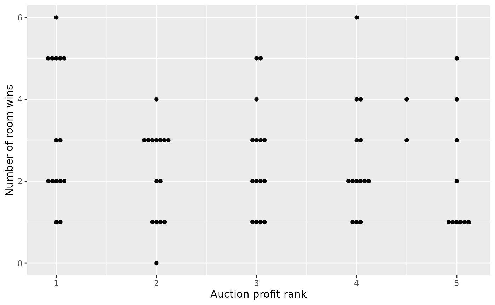

theblock
theblock.Rmd
library(theblock)
library(ggplot2)
library(dplyr)
#>
#> Attaching package: 'dplyr'
#> The following objects are masked from 'package:stats':
#>
#> filter, lag
#> The following objects are masked from 'package:base':
#>
#> intersect, setdiff, setequal, union
library(tidyr)
library(ggbeeswarm)There are two datasets provided by this package:
-
room_results: contains the weekly room scores, by judge and couple. Note that this includes all of the changes in scoring that have occurred over many years on the block, such as contestant voting and substitute judges. You might notice some big scores - it’s almost certainly to do with this -
auction_results: contains the results of the auctions, including reserve, sale price, total profit, and auction rank.
We can get the number of room wins by looking in the
room_results dataset as follows:
room_wins <- room_results |>
filter(judge == "Total") |>
group_by(season, week, area) |>
reframe(winning_score = max(score), winning_team = couple[score == winning_score]) |>
group_by(season) |>
count(winning_team)
room_wins
#> # A tibble: 70 × 3
#> # Groups: season [15]
#> season winning_team n
#> <int> <chr> <int>
#> 1 5 brad_lara 2
#> 2 5 dale_sophie 3
#> 3 5 dan_dani 3
#> 4 5 mike_andrew 2
#> 5 6 dani_dan 1
#> 6 6 josh_jenna 3
#> 7 6 mark_duncan 2
#> 8 6 phil_amity 2
#> 9 7 alisa_lysandra 5
#> 10 7 bec_george 2
#> # ℹ 60 more rowsWe can then plot the number of room wins against the auction results (by rank). Note that we don’t want to compare total dollars won, as over the seasons (generally) profits have increased, properties have gotten bigger, and general real estate prices have grown in Australia.
auction_results |>
select(season, rank, couple) |>
full_join(room_wins, by = c("season"="season", "couple"="winning_team")) |>
replace_na(list(n = 0)) |>
ggplot(aes(x=rank, y = n)) +
geom_beeswarm() +
labs(x = "Auction profit rank", y = "Number of room wins")
In this plot, we are looking for a top-left to bottom-right trend. This would indicate that teams with a lot of room wins (high on the y-axis) make the most money (left on the x-axis). There certainly is a cluster of points in the top-right, but the overall trend is hard to spot.
We can do a formal statistical test of the rank against profit as follows:
result <- auction_results |>
select(season, rank, couple) |>
full_join(room_wins, by = c("season"="season", "couple"="winning_team")) |>
replace_na(list(n = 0))
cor.test(result$rank, result$n)
#>
#> Pearson's product-moment correlation
#>
#> data: result$rank and result$n
#> t = -1.5196, df = 69, p-value = 0.1332
#> alternative hypothesis: true correlation is not equal to 0
#> 95 percent confidence interval:
#> -0.39660942 0.05568441
#> sample estimates:
#> cor
#> -0.1799572Note that because we are testing ranks, this function is actually
equivalent to cor.test(method="spearman"). The p-value
indicates that it is not likely that room wins is correlated
with auction rank. There is a negative correlation, indicating that less
wins is associated with less profit overall.
There is 2 results where a team with only one room win ended up winning the auction. There is also 1 team who won five rooms (out of 12), but famously came last in the auction on their season. Interestingly, Ronnie & Georgia also competed on Season 13, where they came third in the auction.